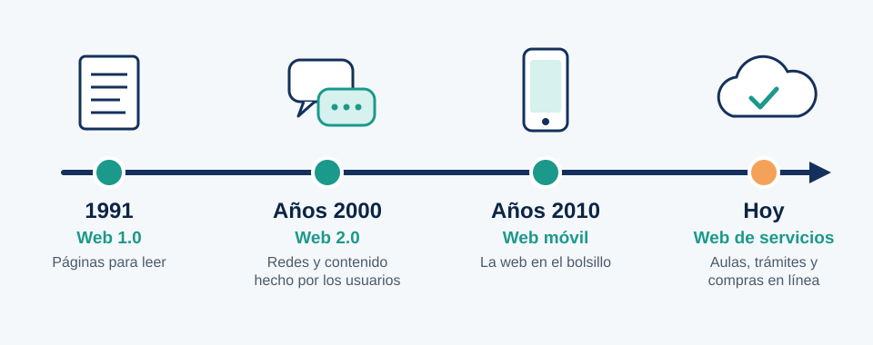
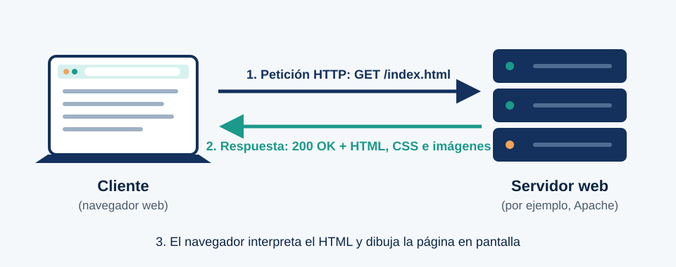
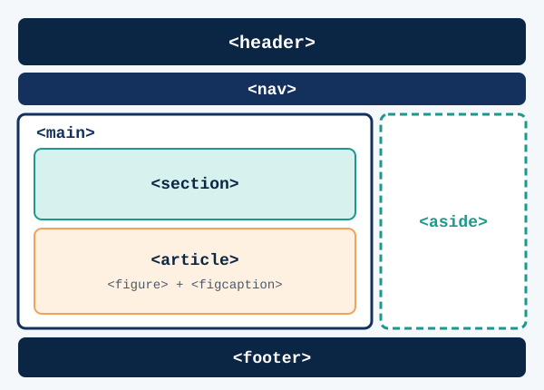

Impacto de las tecnologías web en la sociedad y los negocios
Hace poco más de treinta años la web era un puñado de documentos enlazados entre sí. Hoy por ella pasan las clases, los trámites, las compras y buena parte del trabajo. Para este trabajo escogí ver ese cambio desde dos lados, la sociedad y los negocios, y al final cuento un caso real de un centro de entretenimiento ecuatoriano.
Historia de la web
La web nació en el CERN. En 1989 Tim Berners-Lee propuso un sistema de hipertexto para compartir información entre investigadores y poco después se publicó el primer sitio web. La idea de fondo sigue intacta: documentos escritos en HTML que se enlazan entre sí y que cualquier navegador puede mostrar (Torres Guarnizo, 2026).

Algunos hitos
- : Tim Berners-Lee presenta en el CERN la propuesta de un sistema de hipertexto global.
- : se publica el primer sitio web, que todavía se puede visitar.
- : HTML5 se convierte en recomendación oficial del W3C.
- Hoy: HTML se mantiene como un estándar vivo que se actualiza de forma continua.
Cómo funciona una página
Detrás de cada clic hay una conversación entre dos programas. El navegador (el cliente) envía una petición HTTP al servidor web y el servidor responde con el documento HTML y los archivos que lo acompañan: hojas de estilo, imágenes o videos. El navegador interpreta todo eso y dibuja la página.

Todas las páginas de este sitio usan la misma estructura: header, nav, main, aside y footer.

Video
En las demás páginas hablo de la sociedad, los negocios, un caso práctico y hay un formulario de contacto.